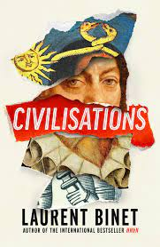

Feb. 8, 2022
‘Civilisations’ is a counterfactual historical novel that attempts to extrapolate the future course of history after changing one pivotal moment of the timeline. I usually find novels like this are great fun, another entertaining example is ‘Making History’ by Stephen Fry. The novel, originally written in French, won some big awards in France last year. I read the translation by Sam Taylor.
In ‘Civilisations’, Binet makes the pivotal point of his tale, the migration of Erik the Red to America in the late 900s. The idea of the novel is that as the vikings move down the coast of north and Central America, they bring exposure to (and therefore some eventual immunity from) smallpox and the ability to work with iron. This equips and prepares the indigenous people ahead of Christopher Columbus’ arrival in 1492.
As a result, in the remainder of the novel, the events that lead to the colonisation of South and Central America by the Europeans are essentially reversed. A civil war among the Incas creates a highly motivated expeditionary force that appropriates Columbus’s boats and sets sail for Lisbon. They arrive just as a great earthquake has shattered the Portuguese capital. Here, Binet has allowed himself some liberty with the timeline—the earthquake in question happened in 1755_. This seems reasonable, earthquakes are random events after all.
From there, a seemingly all-too-small force manages to conquer Portugal and Spain, creating a bridgehead into the remainder of Europe. This also attracts the attentions of the Aztecs…
I should leave it there in case I describe all the plot. I found the story amusing, with much to say about the idiosyncrasies of European history and the relationships between the old world and the new. As someone with a keen interest in South American history (I went there for a bit, I don’t know if I have ever mentioned it) and the history of the reformation (‘Q’ by Luther Blisset is one of my favourite novels), it was narrative catnip for me.
That said, there are few clunky phrases in the translation, some phrases get repeated a little bit too much, especially in the opening section. Some people might find the shifts between narrators (or rather narrative devices) jarring, though I found that the shifts in tone occurred at points where the novel was flagging and were therefore welcome.
As with most novels that play out scenarios in amusing alternative worlds, I did wish at the end that there would be more. Unfortunately, looking at Binet’s other novels, which cover a wide range of interesting historical subjects, I don’t think there will be. I did find myself thinking that it would make a magnificent Netflix series, just putting it out there.
That said, the novel ends with so much more alternative history to be consider! How would the rest of the world fare with Europe under the sway of the Incas and the Aztecs? The indigenous peoples of North America and Australia? How would the continent of Africa have developed without the predations of European colonialism? There’s much still to consider!
